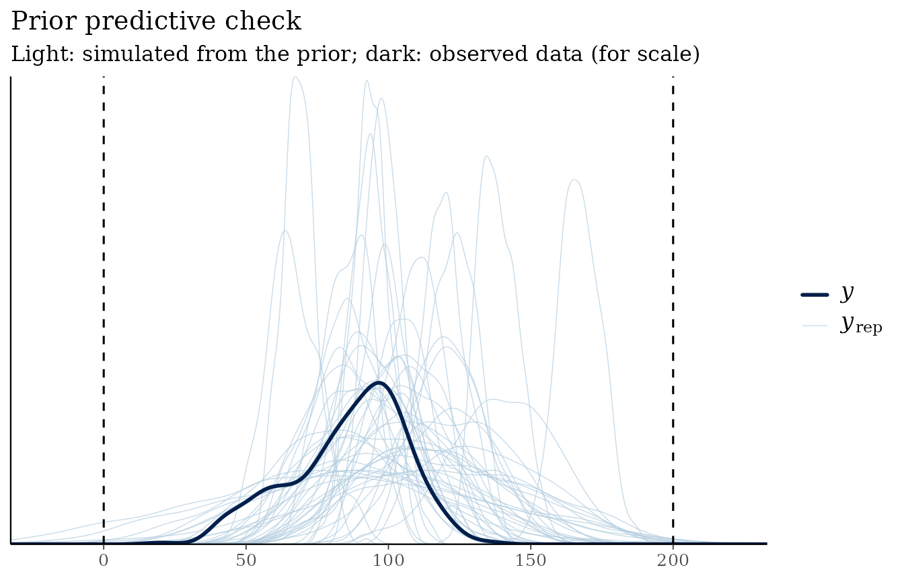
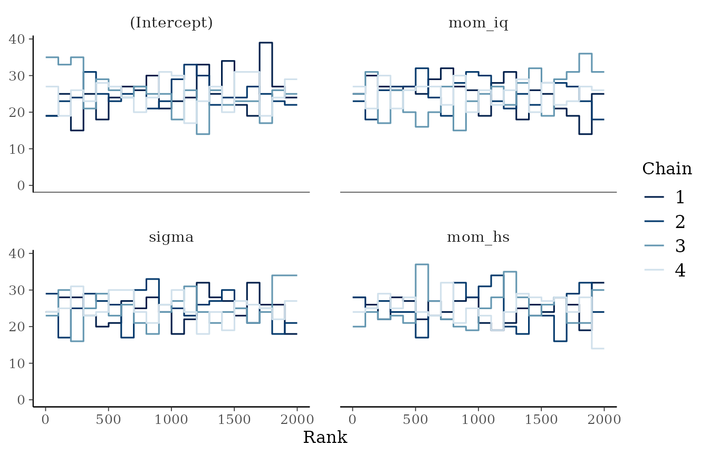
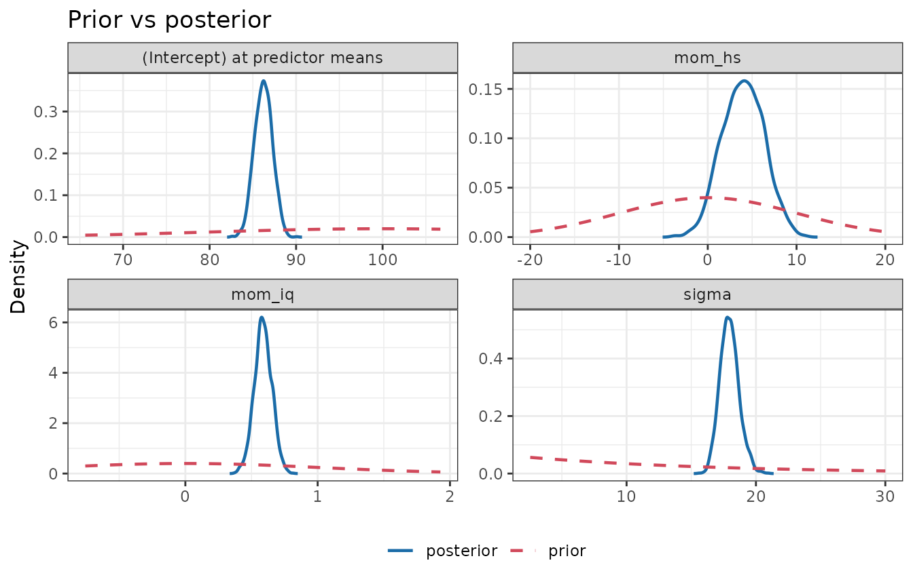

bmbeR walks a regression model through the stages of a Bayesian workflow (Gelman et al., 2020), with the prior treated as a first-class part of the model rather than an afterthought:
- Specify priors on a meaningful scale.
- Check what they imply before seeing the outcome (prior predictive check).
- Fit the model and verify the computation (modern MCMC diagnostics).
- Quantify how much the prior influenced the result (power-scaling sensitivity).
- Evaluate predictions with proper scoring rules.
- Report everything in a checklist aligned with the Bayesian Analysis Reporting Guidelines (Kruschke, 2021).
Models are fitted with rstanarm, so every result is an
ordinary stanreg object that works with the rest of the
Stan ecosystem.
library(bmbeR)
data(kidiq, package = "rstanarm")
head(kidiq)
#> kid_score mom_hs mom_iq mom_age
#> 1 65 1 121.11753 27
#> 2 98 1 89.36188 25
#> 3 85 1 115.44316 27
#> 4 83 1 99.44964 25
#> 5 115 1 92.74571 27
#> 6 98 0 107.90184 18The kidiq data (Gelman & Hill, 2007) record the test
scores of 434 children together with their mothers’ IQ and whether the
mother finished high school. We hold out a test set to evaluate
predictions at the end.
set.seed(42)
test_rows <- sample(nrow(kidiq), 100)
train <- kidiq[-test_rows, ]
test <- kidiq[test_rows, ]1. Specify priors
Priors only make sense relative to the units of the data. Children’s test scores are on an IQ-like scale (mean about 100, SD about 15), so:
- the intercept is the expected score of a child
whose mother has average IQ and schooling (rstanarm puts the intercept
prior at the predictor means, so you don’t have to centre the predictors
yourself):
normal(100, 20); - a one-point increase in the mother’s IQ is unlikely to change the
child’s score by more than about two points:
normal(0, 1)formom_iq; - finishing high school might plausibly shift scores by up to about 20
points:
normal(0, 10)formom_hs; - the residual SD is probably of the order of 15 points:
exponential(1/15).
priors <- prior_config(
intercept = prior_spec("normal", location = 100, scale = 20),
slope = prior_spec("normal", location = 0, scale = c(1, 10)),
aux = prior_spec("exponential", rate = 1 / 15)
)
priors
#> <bmb_prior_config>
#> intercept : normal(location = 100, scale = 20)
#> slope : normal(location = 0, scale = [1, 10])
#> aux : exponential(rate = 0.0667)If you have no substantive knowledge to encode, leave components as
NULL to use rstanarm’s autoscaled weakly informative
defaults, or derive priors from data with
empirical_bayes_priors() (see the article on
Data-informed priors).
2. Check the priors before fitting
A prior predictive check simulates data from the priors alone. Test scores cannot be negative, and scores above 200 would be absurd, so we declare that range as plausible:
pc <- prior_predictive_check(train, kid_score ~ mom_iq + mom_hs,
prior_config = priors,
plausible_range = c(0, 200), refresh = 0)
pc
#> <bmb_prior_check> 200 simulated data sets of 334 observations (gaussian family)
#> Observed outcome range : [20, 136]
#> Prior predictive quantiles : 1%: 16.89 | 5%: 48.73 | 50%: 99.92 | 95%: 152.9 | 99%: 180
#> Mean of simulated data (5%, 50%, 95%): 67.75, 100.1, 132.1
#> Share of simulated values outside plausible range [0, 200]: 0.9%
plot(pc)
The simulated data sets are wider than the observed data, as they should be (the priors are weakly informative), but almost all simulated values stay within the plausible range.
3. Fit the model and verify the computation
fit <- fit_model_with_prior(train, kid_score ~ mom_iq + mom_hs,
prior_config = priors,
chains = 4, iter = 1000, refresh = 0)
attr(fit, "bmb_convergence")
#> <bmb_convergence> PASSED (4 chains, 2000 post-warm-up draws)
#> Criteria: R-hat <= 1.01; bulk/tail-ESS >= 400; divergences <= 0; E-BFMI >= 0.3
#> Max R-hat: 1.003 | min bulk-ESS: 2237 | min tail-ESS: 1271
#> Divergences: 0 | max-treedepth hits: 0 | min E-BFMI: 0.98fit_model_with_prior() runs
check_convergence() automatically using the criteria of
Vehtari et al. (2021): rank-normalised R-hat below 1.01, bulk- and
tail-ESS of at least 100 per chain, no divergent transitions and
adequate E-BFMI. If a check fails it warns and still returns the fit so
you can investigate; rank plots are the most sensitive visual check:

4. How much did the prior matter?
plot_prior_posterior() overlays each prior on its
posterior:
plot_prior_posterior(fit)
prior_sensitivity() quantifies the same question without
refitting, by power-scaling the prior and the likelihood (Kallioinen et
al., 2023):
sens <- prior_sensitivity(fit)
sens
#> <bmb_prior_sensitivity> power-scaling diagnostics (2000 draws, threshold 0.05)
#> variable mean sd contraction prior_mean_sens prior_sd_sens
#> (Intercept) 86.223 1.028 0.997 0.040 -0.007
#> mom_iq 0.588 0.066 0.996 -0.016 -0.005
#> mom_hs 3.975 2.344 0.945 -0.087 -0.025
#> sigma 17.954 0.731 0.998 -0.057 -0.008
#> lik_mean_sens lik_sd_sens conflict_z diagnosis
#> 0.009 -0.534 0.333 -
#> 0.008 -0.458 -0.176 -
#> 0.101 -0.393 -0.439 informative prior
#> -0.279 -0.588 -0.407 informative prior
#>
#> Flagged parameters:
#> mom_hs informative prior
#> sigma informative prior
#>
#> Finite perturbations: posterior mean shift, in posterior SDs, when the prior or
#> likelihood is raised to the power alpha (* = unreliable importance sampling;
#> refit with sensitivity_analysis() instead):
#> prior a=0.8 prior a=1.25 lik a=0.8 lik a=1.25
#> (Intercept) -0.01 +0.01 -0.00 +0.00
#> mom_iq +0.00 -0.00 +0.01 +0.00
#> mom_hs +0.02 -0.02 -0.03 +0.02
#> sigma +0.01 -0.01 +0.08 -0.05
#> Intercept diagnostics refer to the intercept at the predictor means.How to read the table:
-
contractionnear 1 means the data have sharpened the prior a lot. - The
*_senscolumns measure how much the posterior mean and SD respond to strengthening the prior or the likelihood (0 = not at all). -
conflict_zmeasures disagreement between prior and data in standard-error units; values beyond ±2 indicate a prior-data conflict.
The diagnosis flags mom_hs and sigma: for
these parameters the prior contributes a non-negligible share of the
posterior precision. Because every |conflict_z| is well below 2, prior
and data agree, which is what an informative-but-sensible prior should
look like. The remaining parameters are dominated by the likelihood. The
Prior sensitivity article shows what weakly informative,
conflicting and weakly identified cases look like.
5. Evaluate predictions
perf <- evaluate_model_performance(fit, test)
perf
#> <bmb_performance> regression, 100 test observations
#> ELPD (log score, higher = better) -436
#> SE of ELPD 6.01
#> ELPD per observation -4.36
#> RMSE of posterior mean 18.9
#> MAE of posterior mean 15.8
#> CRPS (lower = better) 10.9
#> Coverage of 90% predictive intervals 0.88
#> Mean interval width 59.1Besides RMSE and MAE of the posterior mean, bmbeR reports proper scoring rules that also reward honest uncertainty: the held-out log predictive density (ELPD) and the continuous ranked probability score (CRPS). Coverage of the 90% predictive intervals close to 90% indicates well-calibrated uncertainty.
6. Report
report <- workflow_report(fit, prior_check = pc, sensitivity = sens,
performance = perf)
report
#> Bayesian analysis report (BARG checklist; Kruschke, 2021)
#> ============================================================
#> [ok] 1. Model
#> kid_score ~ mom_iq + mom_hs; gaussian family, identity link; 334
#> observations; 3 coefficients
#> [ok] 2. Priors
#> user-specified: (Intercept) ~ normal(100, 20); mom_iq ~ normal(0,
#> 1); mom_hs ~ normal(0, 10); sigma ~ exponential(rate = 0.0667)
#> [ok] 3. Prior predictive check
#> 90% of prior predictive values in [48.7, 153]; observed range
#> [20, 136]
#> [ok] 4. MCMC computation
#> 4 chains x 1000 iterations (500 warm-up), seed 1234. Max R-hat
#> 1.003, min bulk-ESS 2237, min tail-ESS 1271, 0 divergences.
#> [ok] 5. Posterior summary
#> Means, medians, SDs and 95% central credible intervals for 4
#> parameters (see $posterior).
#> [ok] 6. Posterior predictive check
#> Posterior predictive p-values: mean 0.49, sd 0.52, min 0.86, max
#> 0.91
#> [ok] 7. Cross-validation (PSIS-LOO)
#> elpd_loo = -1440.4 (SE 13.3), p_loo = 4.1; 0 observation(s) with
#> Pareto k > 0.70
#> [ok] 8. Prior sensitivity
#> Power-scaling: mom_hs (informative prior); sigma (informative
#> prior)
#> [ok] 9. Held-out predictive performance
#> ELPD = -436, RMSE = 18.9, CRPS = 10.9, Coverage = 0.88
#> [ok] 10. Software
#> R 4.6.1; rstanarm 2.32.2; rstan 2.32.7; bmbeR 2.0.0
#>
#> Posterior summary:
#> variable mean median sd q2.5 q97.5 p_positive
#> (Intercept) 24.400 24.400 6.5000 11.800 36.900 1.00
#> mom_iq 0.588 0.586 0.0659 0.456 0.716 1.00
#> mom_hs 3.970 4.000 2.3400 -0.524 8.500 0.96
#> sigma 18.000 17.900 0.7310 16.600 19.500 1.00
#>
#> 0 item(s) need attention, 0 not yet done.Items marked [check] need attention and
[ -- ] items have not been done yet. The report adds
posterior predictive p-values and PSIS-LOO cross-validation, which are
cheap to compute from the fit.
Where next
- Choosing priors: why scale matters, autoscaling, and prior predictive checks for logistic regression.
- Data-informed priors: unit-information, empirical Bayes and power priors, and why naively re-using the data is a mistake.
- Convergence diagnostics: what each criterion means and what failure looks like.
- Prior sensitivity: the theory behind the diagnostics, and refitting under alternative priors.
- Predictive evaluation: proper scoring rules and model comparison on held-out data.
References
Gelman, A., & Hill, J. (2007). Data Analysis Using Regression and Multilevel/Hierarchical Models. Cambridge University Press.
Gelman, A., Vehtari, A., Simpson, D., et al. (2020). Bayesian workflow. arXiv:2011.01808.
Kallioinen, N., Paananen, T., Bürkner, P.-C., & Vehtari, A. (2023). Detecting and diagnosing prior and likelihood sensitivity with power-scaling. Statistics and Computing, 34, 57.
Kruschke, J. K. (2021). Bayesian analysis reporting guidelines. Nature Human Behaviour, 5, 1282–1291.
Vehtari, A., Gelman, A., Simpson, D., Carpenter, B., & Bürkner, P.-C. (2021). Rank-normalization, folding, and localization: An improved R-hat for assessing convergence of MCMC. Bayesian Analysis, 16(2), 667–718.